I am a Postdoctoral Researcher at Meta. I received my Ph.D. from Johns Hopkins University, advised by Bloomberg Distinguished Professor Rama Chellappa.
My research focuses on applications of computer vision into multimodal learning, video understanding, and vision-language reasoning. In particular, I work on vision-language pre-training [ICCV'23, TMLR'23], fine-grained video temporal grounding [ICCV'25], multimodal large language models [CVPR'24], and AI for science [NeurIPS'24].
During my Ph.D., I was fortunate to intern at several prominent research groups, including FAIR, Meta with Daffy, Efi, Yale, and Lorenzo (Summer & Fall 2024); Google Research with Subhashini (Fall 2023 & Spring 2024); GenAI, Meta with Nicolas, Amjad, Guangxing, and Qifan (Summer 2023); and FAIR, Meta with Pengchuan, Yale, and Yann (Summer 2022).
Prior to Hopkins, I worked as a research assistant at QCRI in collaboration with IIIT-Delhi. I interned at the University of Montreal through the Mitacs Globalink Fellowship in 2019. I graduated from Jadavpur University, India in 2020 with a B.E. in Electronics and Telecommunication Engineering.
Latest News
- [July, 2025] Defended Ph.D. thesis, and joined FAIR, Meta as a Postdoctoral Researcher (with Christoph and Pengchuan).
- [June, 2025] ED-VTG is accepted in ICCV 2025 as a Highlights.
- [Dec, 2024] Invited talk on SPIQA at Voxel51 NeurIPS 2024 Preshow. Recording can be found here.
- [Oct, 2024] Invited lecture on Introduction to Transformers in EN.520.665 Machine Perception at Johns Hopkins. Recording can be found here.
- [Sep, 2024] SPIQA is accepted in NeurIPS 2024 D&B.
- [Jul, 2024] Joined FAIR, Meta as a returning research scientist intern. Working with Daffy, Efi, Yale and Lorenzo on fine-grained video temporal grounding.
- [Jun, 2024] EgoVLPv2 is awarded as an EgoVis 2022/2023 Distinguished Paper.
- [Jun, 2024] Received Spot Bonus from Google for exceptional contributions while being a student researcher.
- [Apr, 2024] VistaLLM is selected as a Highlight (Top 2.8%) and Ego-Exo4D is selected as an Oral (Top 0.8%) in CVPR 2024.
- [Mar, 2024] Selected to participate in Doctoral Consortium at CVPR 2024.
- [Feb, 2024] VistaLLM and Ego-Exo4D are accepted in CVPR 2024.
- [Feb, 2024] Invited talk at CCVL on EgoVLPv2 and VistaLLM. Recording can be found here.
- [Dec, 2023] Successfully passed the Graduate Board Oral (GBO) examination. Officially a Ph.D. candidate now.
- [Oct, 2023] Joined Google Research as a student researcher. Working with Subhashini on AI for Science.
- [Aug, 2023] VoLTA is accepted in TMLR 2023.
- [Jul, 2023] EgoVLPv2 and UniVTG are accepted in ICCV 2023.
- [Jun, 2023] Received student researcher offer from Google Research for Fall 2023.
- [Jun, 2023] Joined Meta AI as a returning research scientist intern. Working with Nicolas, Amjad, Guangxing, Qifan and Rui.
- [Feb, 2023] 1 paper accepted in Biomedical Signal Processing and Control, Elsevier.
- [Jan, 2023] Received research internship offers from Meta AI (return), Microsoft Research, Adobe Research, Salesforce Research, and Samsung Research America for Summer 2023.
- [Oct, 2022] Attended ECCV 2022, and presented our work Where in the World is this Image?
- [Jul, 2022] 1 paper accepted in ECCV 2022.
- [May, 2022] Joined Meta AI as a research scientist intern. Working with Pengchuan, Li, Yale, and Yann.
- [Jan, 2022] Attended WACV 2022 in person at Waikoloa, Hawaii, and presented our work Multimodal Learning using Optimal Transport.
- [Nov, 2021] Received research internship offers from Meta AI, AWS AI, and Adobe Research for Summer 2022.
- [Oct, 2021] Received EMNLP volunteer fellowship and free registration in EMNLP 2021.
- [Oct, 2021] 1 paper accepted in WACV 2022.
- [Aug, 2021] 1 paper accepted in Findings of EMNLP 2021.
- [Jul, 2021] Received ACL volunteer fellowship and free registration in ACL 2021.
- [May, 2021] 1 paper accepted in Knowledge-based Systems, Elsevier.
- [May, 2021] 1 paper accepted in Findings of ACL 2021.
- [Mar, 2021] 1 paper accepted in ICWSM 2021.
- [Jan, 2021] Joined Johns Hopkins University for my Ph.D. with ECE departmental fellowship, under the supervision of Professor Rama Chellappa.
- [Jun, 2020] Joined Qatar Computing Research Institute (QCRI), Doha as a Research Associate.
- [Apr, 2020] Received Ph.D. admission offers from 7 US Universities – JHU, GaTech, Purdue, UCR, Penn State, WashU St. Louis, and Yale.
- [Jan, 2019] Selected as one of the Mitacs Globalink Research Interns 2019.
Publications
2025
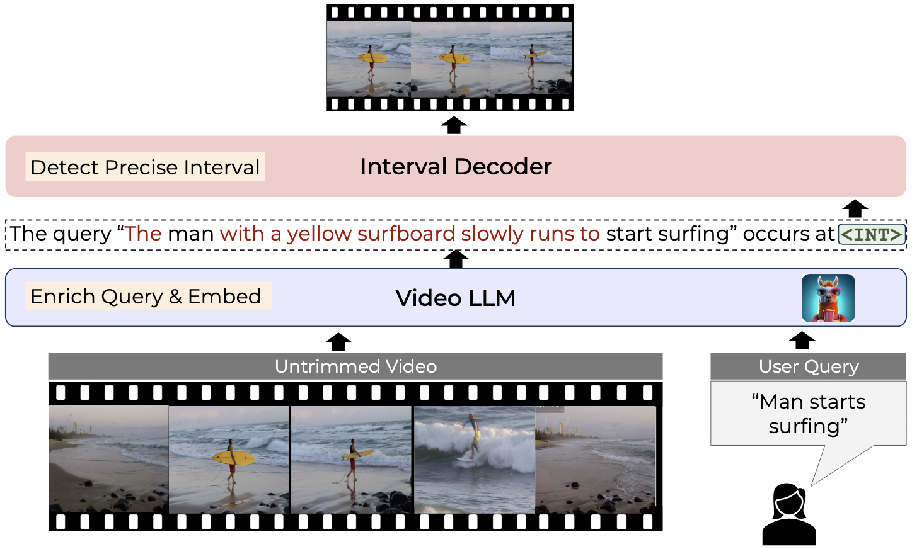
2024
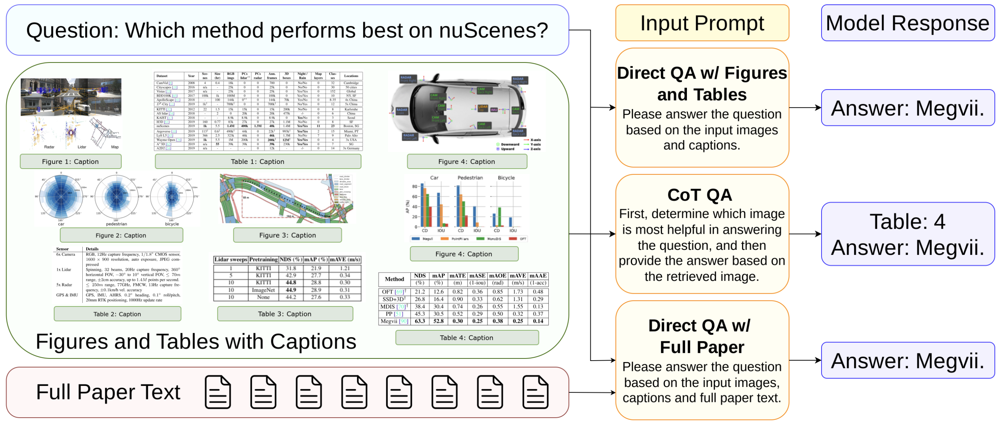
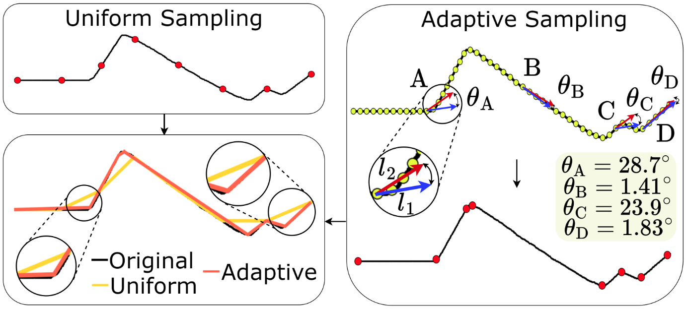
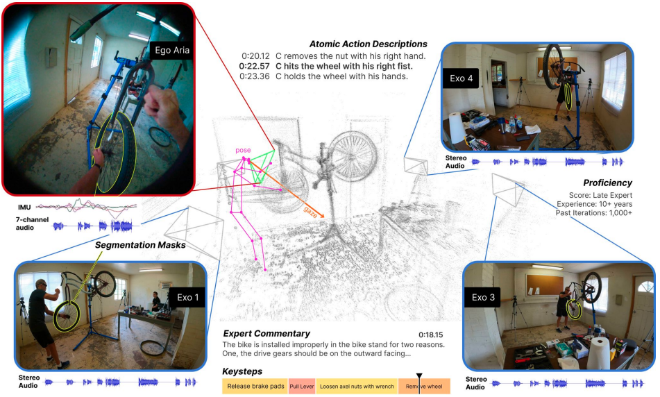
2023
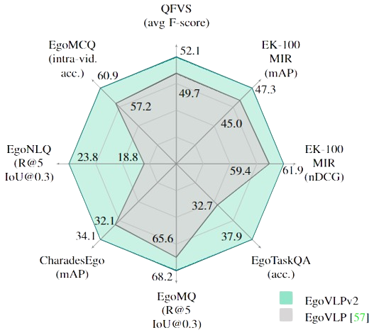
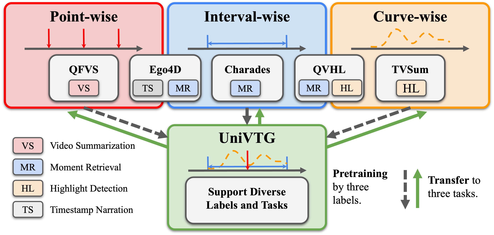
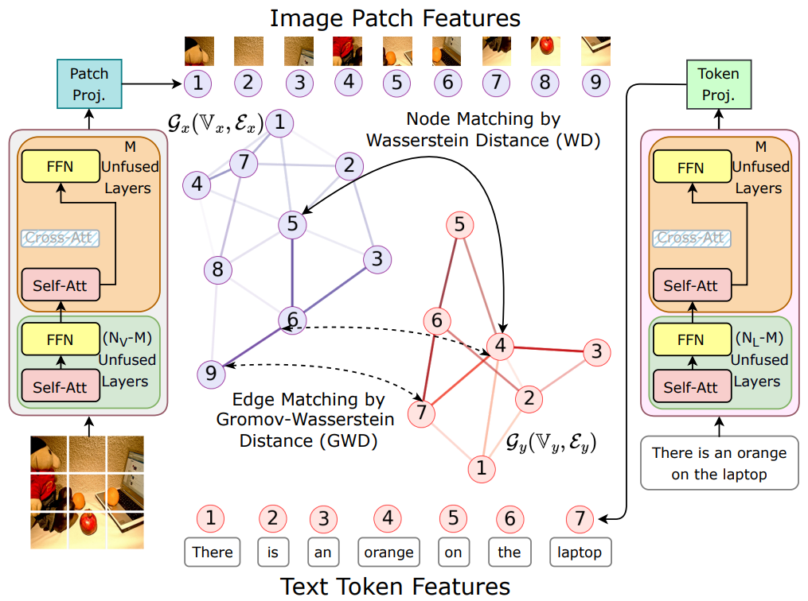
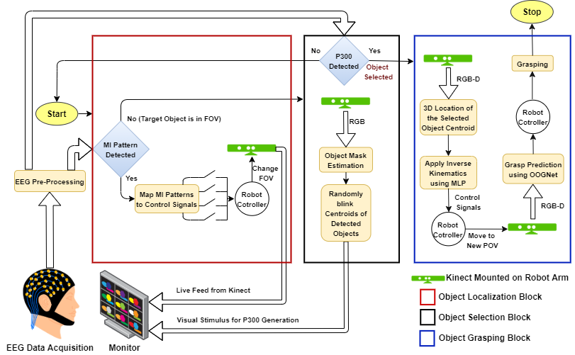
2022
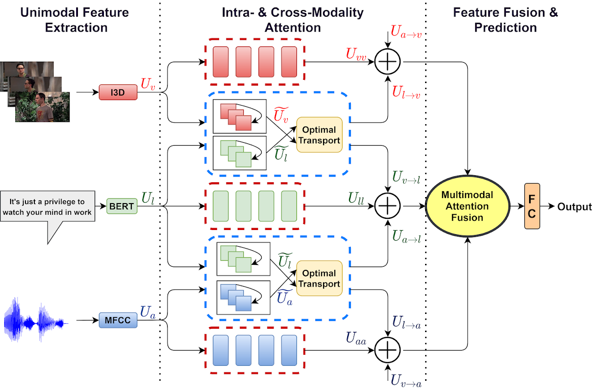
2021
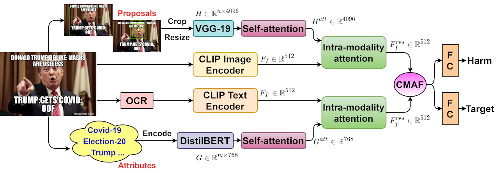
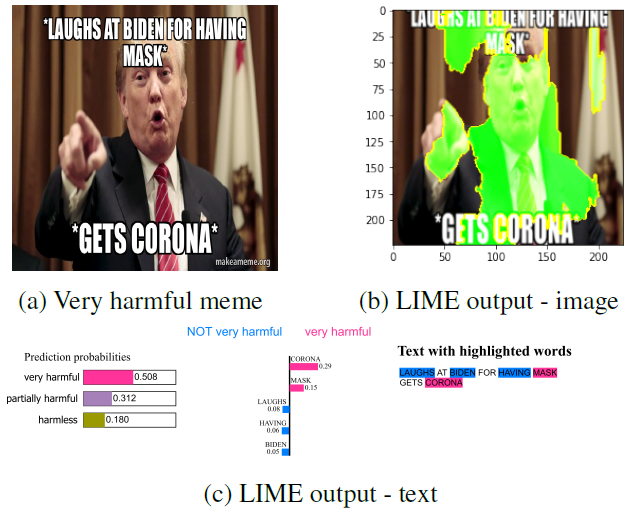
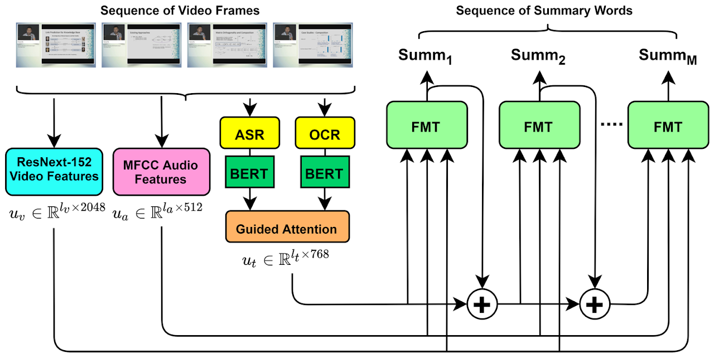
Teaching
I have worked as TA for the following courses:
- Spring 2024 — Machine Intelligence (EN.520.650), Johns Hopkins University
- Spring 2023 — Machine Intelligence (EN.520.650), Johns Hopkins University
- Spring 2022 — Machine Intelligence (EN.520.650), Johns Hopkins University
Selected Honors & Awards
- [June, 2024] EgoVLPv2 is awarded as an EgoVis (Egocentric Vision) 2022/2023 Distinguished Paper.
- [June, 2024] Received Spot Bonus from Google for exceptional contributions while being a student researcher.
- [January, 2021] JHU ECE Departmental Fellowship, awarded to outstanding incoming Ph.D. students.
- [May, 2019] Mitacs Globalink Research Internship, awarded to top-ranked applicants from 15 different countries to participate in a 12-week research internship in Canadian universities.
- [October, 2016] JBNSTS Senior Scholarship, 4-year scholarship for academic excellence during B.E.
Mentoring
I am fortunate to mentor these talented students:
- Yohan Abeysinghe (Ph.D. student, UMD)
- Siyuan Huang (Ph.D. student, JHU)
Professional Service
I have reviewed for:
- Conferences — CVPR, ICCV, ECCV, ICLR, NeurIPS, ARR, EMNLP, ACL, ACMMM, WACV
- Journals — TMLR, TPAMI, TMI, TNNLS, TIP, TAI, TAFFC